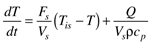

| [ Team LiB ] |
|
2.7 Linear Models and Deviation VariablesConsider the stirred-tank heater model (Example 2.3), when the volume, flow rate, and inlet temperature are constant at their steady-state values (indicated by the subscript s):  Deviation Variable FormulationControl engineers like to think in terms of "deviation variables," that is, perturbations from a steady-state operating condition. The reader should show that if we define the following deviation variables then Equation (2.70) can be written in the form or where the new parameters that appear are Notice that the process gain is the same as the sensitivity shown in Equation (2.60) and the time constant, in this case, is the same as the residence time. Equation (2.73) is one of the most widely used models to describe the dynamic behavior of chemical processes. Linearization of Nonlinear ModelsThe material and energy balance models that describe the behavior of chemical processes are generally nonlinear, while commonly used control strategies are based on linear systems theory. It is important, then, to be able to linearize nonlinear models for control system design and analysis purposes. The method that we use to form linear models is based on a Taylor series approximation to the nonlinear model. The Taylor series approximation is based on the steady-state operating point of the process. One State VariableConsider a single variable function (equation) The value of this function can be approximated using a Taylor series expansion of the form where the subscript s is used to indicate the point of linearization (usually the steady-state operating point). The quadratic and higher order terms are neglected, resulting in the following approximate equation: Since the steady-state operating point is chosen as the point of linearization, then [by definition of a steady state, f(xs) = 0] and since xs is a constant value, we can write the following form or, dropping the "approximately equal" notation where x' = x - xs represents a deviation variable, and is the derivative of the function evaluated at the steady-state value. One State and One InputConsider now the following single-state, single-input equation, The value of this function can be approximated using a Taylor series expansion of the form where the subscript s is used to indicate the point of linearization (usually the steady-state operating point). The quadratic and higher order terms are neglected, resulting in the following approximate equation Since the steady-state operating point is chosen as the point of linearization, then [by definition of a steady state, f(xs, us) = 0] where x' = x - xs represents a deviation variable, and and are the derivatives of the function with respect to the state and input, evaluated at the steady-state value. Output VariableConsider now the expression for an output variable A Taylor series expansion about the state and input yields (after neglecting higher order derivatives) and since ys = g(xs,us) where y' = y - ys, x' = x - xs, and u' = u - us represent deviation variables, and and These basic ideas are illustrated in the following example. Example 2.4: A Second-Order ReactionConsider a CSTR with a single, second-order reaction. The modeling equation, assuming constant volume and density is Here the state variable is CA and the input variable is F. A Taylor series expansion performed at the steady-state solution yields Now, consider the concentration of A to be the output variable so
and the state space model is where the state, input, and output (in deviation variable form) are For the following parameters, A steady-state operating point is and the partial derivatives are
and the linear model is GeneralizationConsider the general nonlinear model with nx states, ny outputs, nu inputs, and np parameters The elements of the linearization matrices are defined as where ij subscripts refer to the ith row and jth column of the corresponding matrix. For example, element Bij refers to the effect of the jth input on the ith state derivative. The linear state space form is where the deviation variables are defined as perturbations from their steady-state values In future chapters we normally drop the prime (') notation for deviation variables and assume that a state space model is always in deviation variable form. Example 2.5: Jacketed HeaterConsider the jacketed stirred-tank heater shown in Figure 2-11. A hot fluid circulated through the jacket (which is assumed to be perfectly mixed), and heat flow between the jacket and vessel increases the energy content of the vessel fluid. The rate of heat transfer from the jacket fluid to the vessel fluid is Figure 2-11. Jacketed stirred-tank heater.where U is the overall heat transfer coefficient and A is the area for heat transfer. Assuming that the volume and density are constant, Fi = F. Energy balances on the vessel and jacket fluids result in the following equations. Here the outputs are the vessel and jacket temperatures, which are also the states; the inputs are the jacket flow rate, feed flow rate, feed temperature, and jacket inlet temperature. If the outputs, states, and inputs, in deviation variable form, are Then, the linearized model is Similarly, the reader should show that Exercise 8 is a numerical example for this problem. |
| [ Team LiB ] |
|